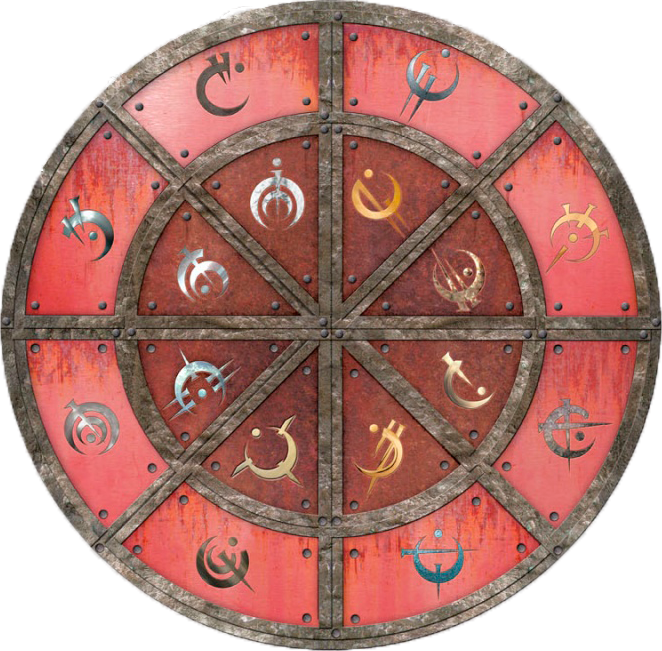
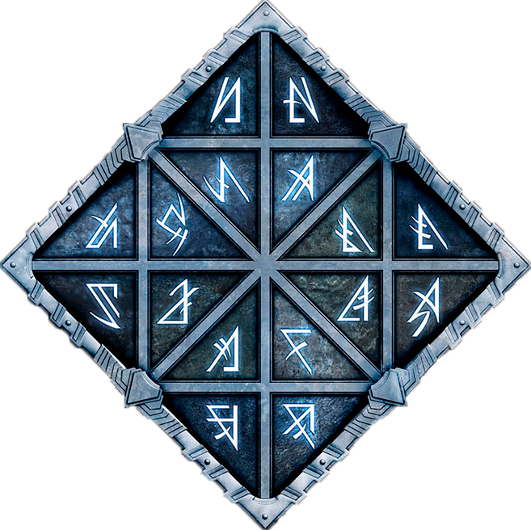

En el sistema Scaldriano en Scadrial, su planeta más importante, hace milenios se establecieron las esquirlas de Ruina y Conservación (posteriormente fusionadas en Armonía en La Batalla de Hathsin), dando 3 tipos de manifestaciones de Investidura conocidas como las tres artes metálicas: la Alomancia, la Feruquimia y la Hemalurgia.
La Alomancia es una de las tres artes metálicas de fin-positivo basado en el poder de Conservacion, que se canaliza con la ingesta y posterior quema de metales. Las personas con esta capacidad se conocen como alomantes. Existen dos tipos principales: brumosos (solo tienen la capacidad de quemar un metal) y nacidos de la bruma (tienen la capacidad de quemar todos los metales).
Los metales que pueden ser quemados se dividen en dos grandes grupos: Metales Alománticos y Metales Divinos.
Existen 16 Metales Alománticos y los podemos dividir en 4 grupos: Físicos, de Mejora, Mentales y Temporales. Cada metal alomántico tiene asociada una pareja, compuesta por un metal puro y una aleación de este. El primero se clasifica con la habilidad de tirar y el segundo con la habilidad de empujar. Cada grupo está compuesto por dos parejas: una de metales externos (interactúan con cosas fuera del cuerpo) y otra de metales internos (interactúan directamente con el alomante).

Estos metales no encajan en las divisiones de los Metales Alománticos. No son compuestos metálicos normales, son la forma condensada y sólida de Investidura Pura. Cada una de las 16 esquirlas (y sus fusiones, como es el caso de Armonía) tienen un metal divino. Solo se sabe el poder alomántico del Atium (metal de Ruina), del Lerasium (metal de Conservación) y de algunas de sus aleaciones.
Atium:
Revela el futuro de los demásLerasium:
Convierte a el que lo quema en un nacido de la bruma o aumenta su poder alománticoMalatium:
Permite ver el pasado de otras personasLa Feruquima es una de las tres artes metálicas de fin-neutro basado en el poder de Conservacion y Ruina. Permite al usuario convertir atributos en investiduras y almacenarlos en metales con los que tiene contacto directo y para posteriormente recuperar estos atributos del mismo metal por un proceso conocido como Decantación. Las personas que tienen esta habilidad son conocidas como Feruquimistas, existen dos tipos los que solo pueden almacenar y decantar un metal, Ferrin, y los que pueden usar todos los metales Feruquimista completo. Las piezas de metal que han sido usadas para almacenar un atributo se les llama Mentes de metal.
Los metales que pueden ser quemados se dividen en dos grandes grupos: Metales Feruquimicos y Metales Divinos.
Existen 16 Metales Feruquimicos y los podemos dividir en 4 grupos: Físicos, Espirituales, Cognitivos e Híbridos. Cada metal feruquimico tiene asociada una pareja, compuesta por un metal puro y una aleación de este.

Estos metales no encajan en las divisiones de los Metales Alománticos. No son compuestos metálicos normales, son la forma condensada y sólida de Investidura Pura. Cada una de las 16 esquirlas (y sus fusiones, como es el caso de Armonía) tienen un metal divino. Solo se sabe el poder Feruquimico del Atium (metal de Ruina)
Atium:
Acumula juventudLa Hemalurgia es una de las tres artes metálicas de fin-negativa basado en el poder de Ruina. Es la transferencia de de atributos como la Alomancia, la Feruquimia o la fuerza humana inata mediante la alteración de la Redespiritu.
Para acceder a esta se introduce un clavo en un punto de anclaje para cargarlo Hemalurgicamente. El clavo contiene un fragemento robado de Redespiritu, este se arranca y se inserta en el receptor fijando la habilidad a su Redespiritu.
Este proceso provoca aperturas en la Redespiritu del recetor abriendo una puerta a Esquirlas, o encendedores y aplacadores poderosos, para poder susurrar o incluso controlar al receptor
Los metales que pueden ser usados para la hemalurgia se dividen en dos grandes grupos: Metales Hemalúrgicos y Metales Divinos.
Existen 16 Metales Hemalúrgicos y los podemos dividir en 4 grupos: Físicos, Espirituales, Cognitivos y Temporales. Cada metal alomántico tiene asociada una pareja, compuesta por un metal puro y una aleación de este.
| Hierro: Roba fuerza | Acero: Roba poderes alománticos físicos |
| Estaño: Roba sentidos | Peltre: Roba poderes físicos feruquímicos |
| Cinc: Roba fortaleza emocional | Latón: Roba poderes feruquimicos cognitivos |
| Cobre: Roba fortaleza mental, memoria e inteligencia | Bronce: Roba poderes mentales alománticos |
| Cromo: Podría robar destino | Nicrosil: Roba Investidura |
| Aluminio: Elimina todos los poderes | Duraluminio: Roba Conexión/Identidad |
| Cadmio: Roba poderes temporales alománticos | Bendaleo: Roba poderes espirituales feruquímicos |
| Oro: Roba poderes feruquímicos híbridos | Electrum: Roba poderes alománticos de mejora |
Estos metales no encajan en las divisiones de los Metales Hemalúrgicos. No son compuestos metálicos normales, son la forma condensada y sólida de Investidura Pura. Cada una de las 16 esquirlas (y sus fusiones, como es el caso de Armonía) tienen un metal divino. Solo se sabe el poder alomántico del Atium (metal de Ruina) y del Lerasium (metal de Conservación)
Atium:
Revela el futuro de los demásLerasium:
Convierte a el que lo quema en un nacido de la bruma o aumenta su poder alomántico